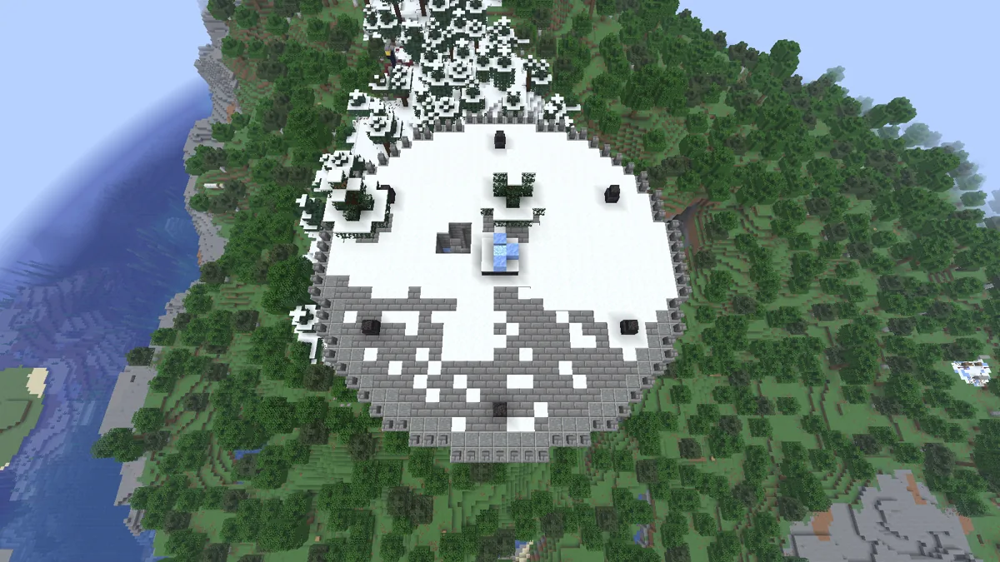
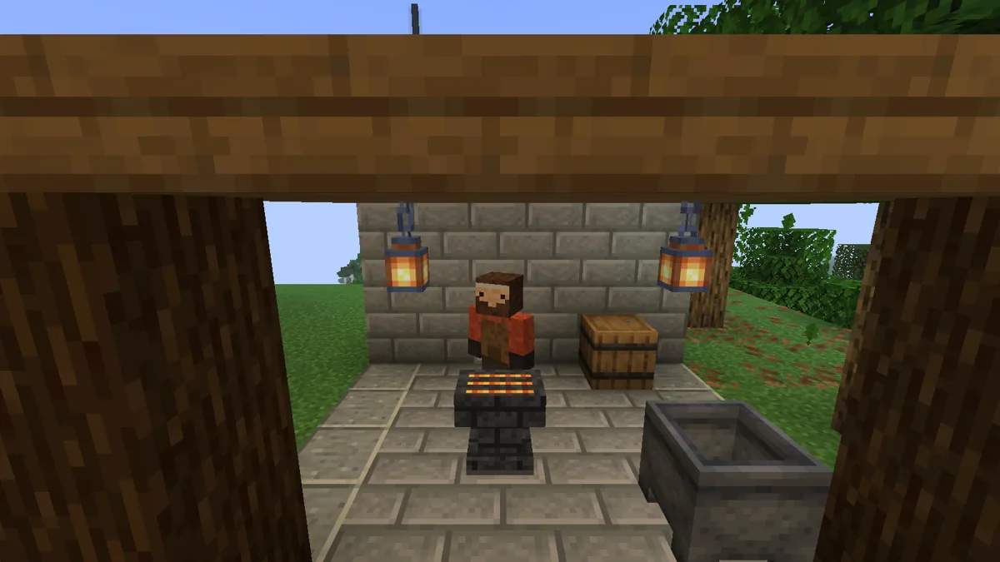
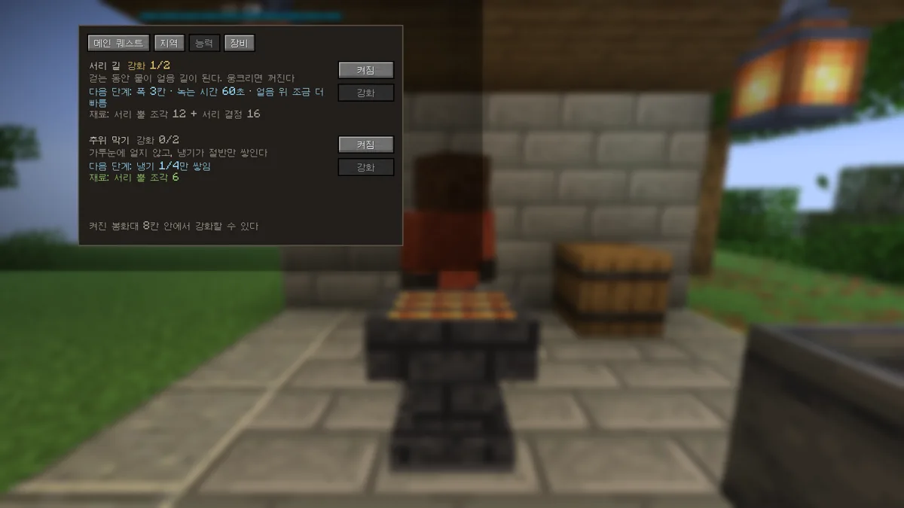

소개
- 지역 해방보스를 처음 쓰러뜨리면 그 지역이 월드에 한 번 해방됩니다
- 사람마다 보상증표와 보스 고유 아이템은 싸움에 기여한 사람마다 받습니다
오픈크래프트는 바닐라 지형 위에 지역을 덧씌우고, 몇몇 지역은 땅부터 새로 만듭니다. 높은 곳에 오르면 멀리 탑과 보스의 거처가 보이고, 보이는 곳은 모두 가 볼 수 있습니다.
메인퀘스트는 지역의 보스들을 쓰러뜨리고 마지막 목표로 가는 한 줄기입니다. 순서는 정해져 있지 않아서, 어느 지역부터 갈지와 어떻게 준비할지는 플레이어가 정합니다.
지금은 개발 초기입니다. 공개된 0.1.0 베타에는 설원 지역 하나(봉화탑 · 보스 · 필드몹 · 야영지 · 모험 일지 · 빠른 이동)가 들어 있습니다. 다음 배포(0.2.0 베타 1)에는 드랍 장비 등급과 부가 옵션, 봉화탑 대장간, 보스 재도전과 반복 보상, 능력 강화가 들어갑니다. 사막 · 늪 지역과 마을은 그다음입니다.
스크린샷
개발 중 화면입니다. 텍스처 · 모델 · 이펙트는 계속 다듬고 있습니다.
설원 봉화탑. 꼭대기 전투장에 보스가 잠들어 있고, 쓰러뜨리면 봉화가 켜집니다.
보스 서리 큰뿔. 얼음 갑옷을 두르면 불씨를 날라 화로를 켭니다.

위에서 본 전투장. 사람이 오면 정리되고 보호됩니다.

봉화탑 대장간과 봉화지기 (다음 배포). 수리 · 옵션 추가 · 재설정.

모험 일지의 능력 탭. 보스 재료로 능력을 강화합니다 (다음 배포).
무엇이 있나
-
지역별 마을 계획
지역마다 생김새와 주민, 의뢰가 다른 마을이 있습니다. 해방한 지역의 마을은 장비를 다듬는 본거지가 됩니다.
-
필드몹과 거점 0.1.0
지역에 맞는 적이 들판을 돌아다니고, 곳곳에 그들의 야영지가 있습니다. 다음 배포부터는 우두머리가 지키고, 쓸어낸 야영지가 며칠 뒤 다시 찹니다.
-
보스 0.1.0
지역마다 전용 거처에 보스가 있습니다. 해방한 뒤에도 거처에서 다시 불러내 싸울 수 있습니다.
-
최초 보상과 반복 보상 다음 배포
보스를 처음 쓰러뜨리면 증표(불씨)와 능력을 받습니다. 공물로 다시 불러 싸우면 보스 장비와 강화 재료를 꾸러미로 받고, 기여가 클수록 많이 굴립니다.
-
장비 등급과 부가 옵션 다음 배포
드랍 장비에는 다섯 등급과 무작위 부가 옵션이 붙습니다. 봉화탑 대장간에서 수리하고 옵션을 더하거나 다시 굴립니다. 바닐라 인챈트 장비와는 다른 길입니다.
-
혼자 또는 친구와 0.1.0
싱글과 친구 서버 모두 됩니다. 늦게 들어온 사람도 해방된 지역의 보스를 다시 불러내 직접 겪고 증표를 모을 수 있습니다.
개발 현황
| 단계 | 내용 | 상태 |
|---|---|---|
| M0 | 빌드 환경 · 모드팩 바탕 · 지역 덧씌우기 확인 | 완료 |
| M1 | 설원 지역: 봉화탑 · 보스 서리 큰뿔 · 필드몹 · 야영지 · 모험 일지 · 빠른 이동 | 완료 |
| 0.1.0 베타 2 | 첫 콘텐츠 빌드 (설원 지역), 베타 1이 켜지지 않던 문제 고침 | 공개 |
| M2 | 드랍 장비 등급과 부가 옵션 · 봉화탑 대장간 · 야영지 우두머리 · 보스 재도전과 반복 보상 · 능력 강화 | 완료 |
| 0.2.0 베타 1 | M2 묶음 | 다음 배포 |
| M3 | 사막 · 늪 지역 · 지역 마을 · 도감 (지역 틀 일반화와 바이옴 덧칠부터) | 진행 중 |
| M4 | 마지막 목표 "첫 탑" · 최종 보스 | 계획 |
설치
플레이하는 사람
- Prism Launcher를 설치합니다.
- Prism 인스턴스(
.zip)를 받아 "인스턴스 추가 → 가져오기"로 엽니다. - 켜면 처음 한 번 모드를 받습니다. 그 뒤로는 켤 때마다 새 버전을 확인해 바뀐 것만 받습니다.
Modrinth App을 쓰면 .mrpack을 "모드팩 가져오기"로 엽니다. 새 버전이 나오면 '모드팩 업데이트' 프로그램으로 인스턴스를 그대로 둔 채 바꿀 수 있습니다.
서버 여는 사람
- Minecraft 26.3용 Fabric 서버를 만듭니다.
mods폴더에 모드.jar와 Fabric API, 그리고 릴리스 노트 표에서 "서버에도"가 O인 모드를 넣습니다.- 서버와 플레이어의 모드 버전이 같아야 들어갈 수 있습니다.
릴리스 노트
불러오는 중…